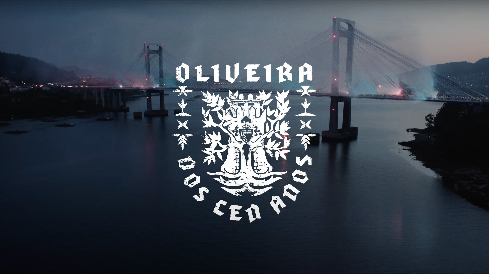
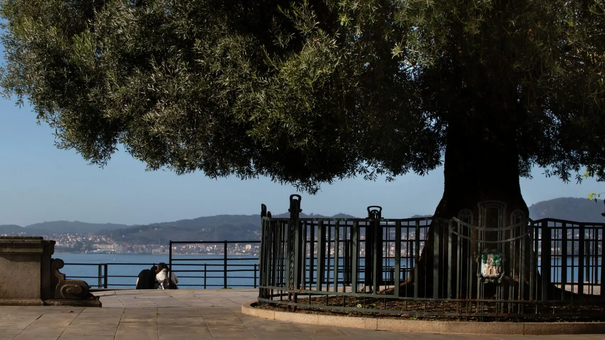

Localización
Vigo
É a cidade onde se sitúa o estadio de Balaídos, onde o Real Club Celta xoga os seus partidos oficias na máxima categoría do fútbol español, e onde tamen xoga as veces o seu filial, o Fortuna, ou cando ten que xogar, este ano os xoves, nas noites de Europa League.
Vigo é coñecida popularmente como a "Cidade Olívica" debido a unha oliveira centenaria que é un símbolo da cidade e aparece no seu escudo. O exemplar actual atópase no Paseo de Alfonso XII. Ademais relacionado a isto, o himno centenario do Celta feito por C. Tangana chamase Oliveira dos Cen anos referenciando isto.

